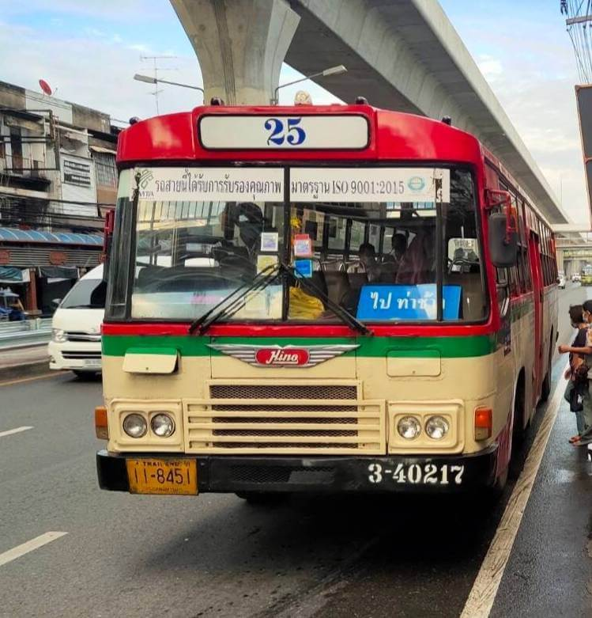

25
แพรกษาบ่อดิน - ท่าช้าง
• ต้นทาง : 03.00 - 22.30
• ปลายทาง : 04.00 - 23.40
• มีรถกะสว่าง 00.00 / 01.30 / 02.00
• มีรถเสริมพิเศษ โรงเรียนปทุมคงคา - วัดธาตุทอง
• มีรถตัดเสริม โรงเรียนปทุมคงคา - ช้างเอราวัณ
• มีรถตัดเสริม โรงเรียนปทุมคงคา - ปากน้ำ
• มีรถทางด่วน